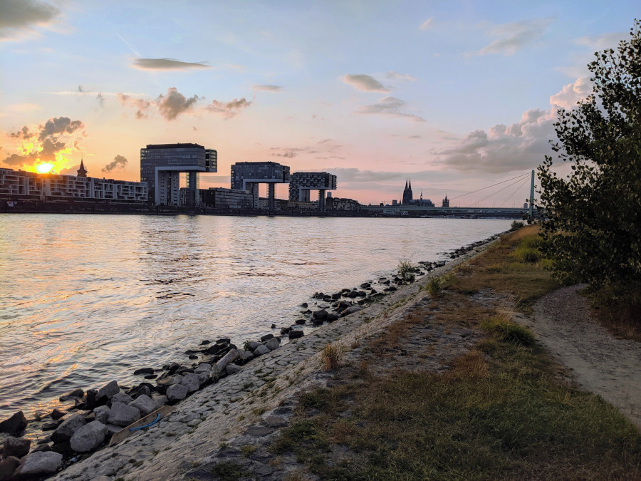

I am a student of physics at the university of Cologne. Currently I spent my time with my masters's thesis. Recently I have been interested in K-theory of C*-algebras. In general my interests are in mathematical physics and mathematics.
During the literature research for my bachelor' s thesis, I encountered numerous pay walls and membership restrictions. Although the university has contracts with the various institutes and publishers, it still adds a level of annoyance. As much as I do understand the need for proper payment, I myself believe that science has to be available for everyone. For that reason I have decided to upload the notes that have seen enough care to have proper (enough) citation.